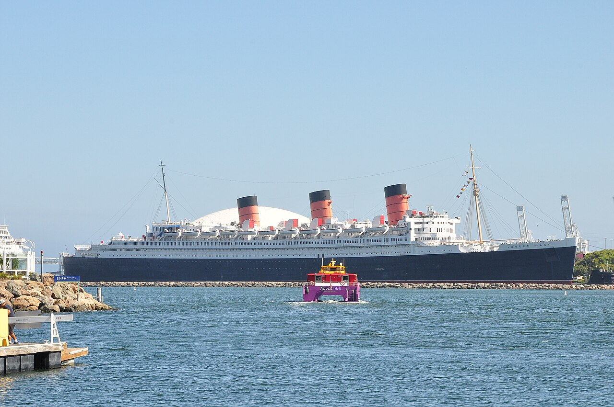

Los Angeles in a Port Day: San Pedro and Long Beach

Los Angeles is the cruise port where the city refuses to come to you. The terminals are clean, modern and easy to walk off — and then there is nothing to walk to. Everything worth seeing is a drive away, and the traffic is the real schedule. Get a car or a rideshare sorted before you step off the gangway, pick one part of the city, and Los Angeles is a great port day.
Arriving: two terminals, six miles apart
Almost every line except Carnival uses the World Cruise Center in San Pedro, Berths 91–93 at the Port of Los Angeles, about 25 miles south of downtown LA. Carnival sails from the Long Beach Cruise Terminal, the geodesic dome beside the Queen Mary, about six miles east of San Pedro. Confirm which one your ship uses before booking a hotel or a car — they are 15 to 20 minutes apart by road, and a wrong guess strands you at the wrong waterfront. Cruisers step straight ashore at both terminals, as ships never tender here, with taxi and rideshare pickup zones just outside the building. Parking at the World Cruise Center runs roughly $20 a day.
The waterfront day: no car needed
If you do not want to drive, stay on the waterfront — the only part of Los Angeles that works on foot. Right beside the San Pedro terminal sits the Battleship USS Iowa, a World War II battleship turned museum, roughly $30 for an adult ticket and two to three hours to walk properly. The Los Angeles Maritime Museum and the San Pedro waterfront promenade are a short walk away. Over in Long Beach, the Queen Mary — the retired ocean liner permanently docked beside the Carnival terminal — runs tours and admission for roughly $45, and the Aquarium of the Pacific is one of the best aquariums in the country at roughly $50. The two waterfronts are about 15 to 20 minutes apart by taxi or rideshare, so combining the Iowa in the morning with the Queen Mary or the aquarium in the afternoon is a realistic, low-stress day that never touches a freeway.
Driving into LA: pick one area
The big-name sights are 25 to 40 miles out, and the honest arithmetic is that you get one of them. Downtown LA is about 23 miles from San Pedro, Hollywood around 28, and Santa Monica further still. A rideshare runs roughly $30–55 each way off-peak to downtown or Hollywood, taking 25 to 45 minutes — double that in traffic. Taxis run roughly $60–90 for the same trip. So choose: Hollywood for the Walk of Fame, the TCL Chinese Theatre and a view of the Hollywood Sign from Griffith Observatory; downtown for Grand Central Market, the Broad museum and the historic core; or Santa Monica and Venice for the pier and the beach boardwalk. Do not try two — the drive between them is the day. A rental car runs from roughly $60 a day plus parking, and is worth it only if you are covering several far-apart stops. Public transit exists — the Metro J Line bus from San Pedro connects to the rail system downtown — but a trip to Hollywood takes over two hours with transfers, and it is the wrong tool for a port day. Whatever you choose, be back at the terminal at least 90 minutes before the boarding cutoff; LA traffic doubles any drive time without warning.
Getting around
Rideshare is the realistic option for most cruisers: Uber and Lyft pick up at both terminals. Surge pricing at disembarkation time is real, so expect the fare to be higher in the first hour after the ship clears. If you rent, book ahead and check where the pickup is — Enterprise and Hertz have branches minutes from the San Pedro terminal, with free port shuttles, and Enterprise has one near the Long Beach terminal too, so a short rideshare gets you to the car. Local branches keep limited hours (typically weekdays 8–6, Saturday morning, closed Sundays), so book ahead. Parking downtown and in Hollywood runs roughly $15–30 for the day.
What a port day costs (approximate, per person)
- Rideshare to downtown or Hollywood and back (split two ways): roughly $30–55 each
- Battleship USS Iowa: roughly $30
- Queen Mary: roughly $45
- Aquarium of the Pacific: roughly $50
- Lunch on the waterfront or at Grand Central Market: roughly $15–25
- Hollywood sights, the observatory, the beaches: free to walk
- Comfortable total, waterfront day: roughly $60–100
Tips for cruisers
- Traffic is the schedule. Allow double the map time to get back to the ship, and be at the terminal 90 minutes before the cutoff.
- One area, not three. Hollywood plus downtown plus the beach is a day on the freeway, not a day in Los Angeles.
- The waterfront day is the underrated one. The Iowa and the Queen Mary are both walkable from the terminals, and both beat a rushed drive to a crowded sidewalk.
- Check which terminal before booking anything. San Pedro and Long Beach are six miles apart, and the wrong guess costs an hour.
Prices and hours are approximate and were checked in November 2026; rideshare fares move with traffic and surge pricing, and attraction prices change. Confirm on the day if a price decides the plan.